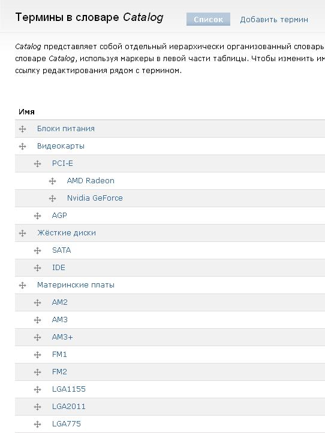
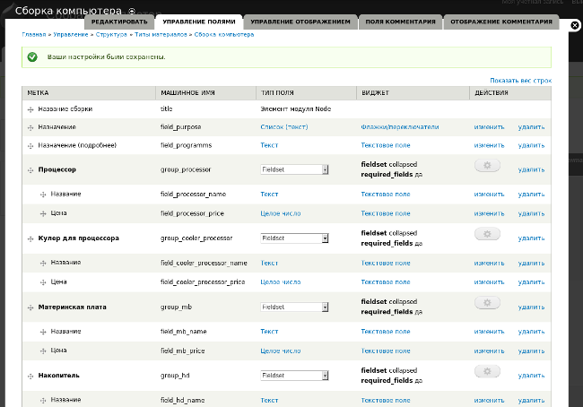
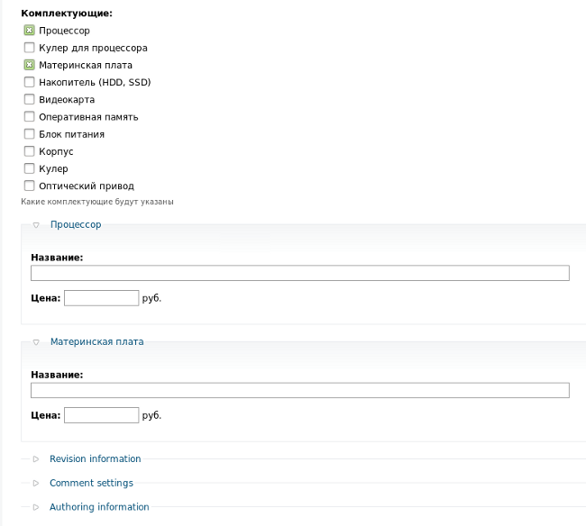
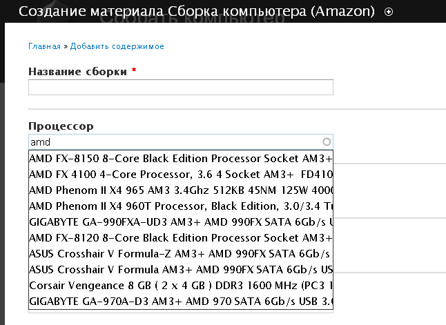

Целью данной работы было исследование и оценка возможностей CMS Drupal, в результате чего можно было бы дать заключение, можно ли с помощью данной системы создать сайт для помощи при сборке персонального компьютера.
Сайт-сервис должен был бы предлагать посетителю возможность удобного просмотра сборок ПК разного назначения (офисного, игрового и др.). Должна быть предусмотрена сортировка и фильтрация сборок по различным характеристикам. Посетитель сайта должен иметь возможность создавать собственные сборки, чтобы выяснить подходят ли комплектующие, соответствует ли сборка назначению. Пользователи должны иметь возможность голосовать за сборки и оставлять комментарии.
В результате выполнения данной работы удалось реализовать часть планируемых задач. При этом были изучены две версии CMS Drupal (6 и 7), около десятка модулей, создано несколько вариантов структуры сайта. Был сделан вывод: несмотря на то, что Drupal позиционируется как гибкая система, создать узко-специализированный проект лишь подбором различных модулей невозможно. Одним из решений может быть разработка собственных модулей. Кроме того, в результате выполнения исследования открылась еще одна проблема — разработка базы данных комплектующих таким образом, чтобы установить между ними связь по совместимости.
Многие люди хотят не просто купить компьютер, а собрать его самостоятельно из комплектующих. На некоторых форумах (например, http://www.cyberforum.ru/computer-config/ ) люди часто спрашивают, какие компоненты подобрать для ПК, предназначенного для определенной цели. Многие составляют сборки и просят их оценить и прокомментировать остальных участников форума. Появилась идея создать сайт помощи сборки ПК. Что значит «собрать» компьютер в данном случае:
Система управления контентом (CMS – content management system) Drupal позиционируется как гибкий «продукт» для создания сайтов. Под гибкостью понимается то, что с его помощью можно создавать различные по структуре и назначению сайты, а не однотипные (как, например, Wordpress, позиционирующий себя преимущественно как CMS для блогов). Гибкость Drupal обеспечивается тем, что есть ядро системы, включающее немногочисленный ряд основных (стандартных) модулей, и есть огромное множество модулей, расширяющих функциональность системы. В зависимости от того, какие модули подключены можно получать различные сайты.
Целью работы было выяснить, можно ли, используя Drupal и подбирая различные модули, создать сайт-сервис «сборки» ПК. Или получить такой узко-специализированный сайт на Drupal нельзя и единственным вариантом является написание собственной CMS.
Перед тем как искать модули и их комбинации надо точно определиться с тем, что мы хотим получить, и как это будет выглядеть. В идеальном варианте – это может выглядеть так:
Итак, «сервис» сайта заключается, во-первых, в возможности поиска подходящих сборок среди ранее созданных по различным критериям, а во-вторых – в автоматизированной помощи при составлении сборки.
Следует дополнительно отметить, что человек может указывать не все компоненты, во-вторых - хорошо бы, чтобы автоматически считалась сумма сборки.
Примечание:
Материал – тип статьи, нода – отдельно взятая статья (конкретная сборка).
Допустим, у нас на сайте есть 500 нод типа «Сборка компьютера». В каждой ноде указаны или не указаны: процессор, материнская плата, жесткий диск, видеокарта и др, назначение сборки, цена сборки, ее рейтинг. Человек может захотеть отфильтровать только те сборки, в которых используется процессор модельного ряда Intel Core i5, или только те, цена которых лежит в пределах от 15 до 20 тыс. рублей, или посмотреть только «игровые» сборки.
Модуль Views позволяет это сделать. Он создает различные коллекции статей, объединенных по тем или иным признакам, и представляет коллекции как отдельные страницы. При этом фильтрацию и сортировку можно включить так, чтобы ее выполнял посетитель сайта.
В состав ядра Drupal входят такие модули как Таксономия (Taxonomy) и Подшивка (Book). Оба позволяют относить статью к категориям. Однако ноду нельзя отнести к двум подшивкам (категориям) одновременно, а к терминам таксономии можно. Можно создать несколько словарей: «сокеты», «модель процессора», «производитель материнской платы», «назначение компьютера» [Приложение 1]. Однако человек может указать неверную категорию при создании ноды, кроме того, для него это лишняя работа, если он указывает название процессора, то его сокет и модельный ряд уже указаны. Конечно, можно было бы создать словари, содержащие все существующие комплектующие, но это трудоемкая задача, т.к., например, только количество существующих на данный момент в продаже процессоров более 100 моделей, а материнских плат более 1500.

Модули CCK позволяет решить данную задачу более элегантно. CCK позволяет добавлять поля различного типа в форму материала. Можно создать поля, куда человек будет вставлять названия комплектующих и их цену [Приложения 2, 3, 4]. Далее с помощью модуля Views можно сформировать различные представления [Приложения 5, 6]:

Для Drupal существует ряд различных модулей, позволяющих добавлять рейтинги. Один из них Fivestar. Он позволяет добавлять рейтинги к материалу и комментариям. Однако он различается между Drupal 6 и Drupal 7. В Drupal 6 можно включить рейтинг для материала так, чтобы голосовали пользователи сайта. Однако специального поля при этом не создается, поэтому во Views нельзя задать отображение рейтинга статей в формируемой коллекции. Если же к материалу добавить поле Fivestar (и со Views проблема будет решена), то голосовать может только при создании статьи, что не подходит для идеи проекта. В рейтинг комментариев в Drupal 6 заложена следующая идея: каждый комментатор выставляет оценку статье, она отображается в комментарии, а на статье отображается средний рейтинг по комментариям.
В Drupal 7 модуль Fivestar дает немного другую функциональность. Здесь единственный способ добавить рейтинг к материалу — это создать поле Fivestar. Поэтому проблема с модулем Views решена изначально. Это поле можно настроить так, что голосовать будут именно посетители, а не тот, кто создает конфигурацию компьютера. Также в Drupal 7 к комментариям может быть привязан отдельный рейтинг, не связанный с нодой. Это больше подходит к нашему проекту. Однако модуль Fivestar для ветки Drupal 7 на данный момент существует в версии «alpha», поэтому некоторые дополнительные настройки отсутствуют, например, нет возможности писать, что значат уровни рейтинга.
Необходимо, чтобы человек при создании материала «Сборка компьютера» не мог, например, ввести в поля «Процессор» и «Материнская плата» несовместимые комплектующие, не мог указать блок питания на 350 W, если указал мощный процессор.
К сожалению, в названиях комплектующих не всегда отражены характеристики, определяющие совместимость. Поэтому, пришлось бы в форму материала «Сборка компьютера» добавлять дополнительные поля-описания комплектующих и уже потом указывать их совместимость с помощью какого-либо модуля. Такой вариант материала рассматривался, однако форма получилась слишком большой (не каждый пользователь станет ее заполнять). И самое главное, не удалось найти модуля, который бы устанавливал требуемые зависимости между полями. Кроме того, эти зависимости слишком разные.
Хотелось бы отметить модуль Conditional Fields. Он позволяет скрывать/отображать поля в зависимости от значения других полей (которые должны иметь тип «флажки» или «радиокнопки»). С его помощью в Drupal 6 был создан такой вариант: при создании материала можно выбрать, какие компоненты сборки будут указаны и только после этого появятся группы полей для этих компонентов, остальные поля будут скрыты [Приложение 8]. Это удобно не столько при создании материала, сколько при формировании вида, когда к виду можно добавить поле, в котором видно сколько компонентов используется в сборке. Однако данный модуль для Drupal 7 существует в состоянии «dev» (версия для разработчиков). Хотя модуль работает, нет возможности настроить скрытие/отображение для групп, а не отдельных полей. Это минус, которые уничтожает все плюсы использования этого модуля.

Хорошо бы ограничить ввод в поле только теми устройствами, которые существуют.
Яндекс.Маркет имеет API, позволяющий сайтам получать сведения о товарах. Однако ключ к нему можно получить, лишь описав проект, указав его адрес и количество посетителей. Также для Drupal отсутствует модуль использования API Яндекс.Маркета так, чтобы можно было импортировать на сайт сведения о товарах.
Модуль Amazon предоставляет доступ к информации о товарах, размещенных на http://amazon.com. Обычные поля в форме материала «Сборка компьютера» можно заменить на Amazon field, которые ограничат ввод пользователя только товарами, которые присутствуют на сайте Амазона (можно настроить ввод как названия товар или его номер — ASIN). Помимо этого можно настроить, как будут выглядеть товары в готовой ноде (будут ли там изображения, краткое описание и др.). В результате статьи получаются более красочными, но на английском [Приложение 9]. Однако вряд ли Amazon.com содержит все существующие комплектующие.

Можно решить проблему, если на сайте Амазона нет необходимых комплектующих следующим образом. Создать на сайте два материала «Сборка компьютера» и «Сборка компьютера (Amazon)». В первой ввод комплектующих в поля будет осуществляться вручную, а во второй — с помощью Amazon field. Человек сам выберет, что ему подходит. Однако в таком случае появляется проблема с созданием общих видов (модуль Views) для двух материалов, т.к. появляется в два раза больше полей. Решить ее можно только лишь создав отдельные виды для каждого материала.
Можно было бы создать сайт-сервис по-другому. Если создать собственную базу данных комплектующих, установить между ними зависимости, то часть проблем бы решилась (значения уже не вводятся в поля, а выбираются из списка; например, после выбора процессора появляется список лишь подходящих материнских плат). Как было сказано раньше, это сложно из-за большого количества комплектующих и множества зависимостей.
Одним из решений может быть — предоставить пользователю самому добавлять комплектующие, если их описания нет на сайте, перед тем как создавать ноду материала «Сборка компьютера».
Еще одна полезная особенность, если на сайте будут материалы-комплектующие и выбор будет происходить из них. Можно использовать подмодуль CCK Node Reference, позволяющий ссылаться на материал компонента. При этом материал «Сборка компьютера» можно настроить так, чтобы при щелчке по компоненту, открывалась не его страница, а данные появлялись на текущей странице. Т.е. пользователь сразу может смотреть не только сборку, но и подробную информацию по комплектующим.
В результате изучения CMS Drupal версий 6 и 7 и ряда их модулей пришли к следующему:
На данный момент пришли к следующему рабочему варианту сайта по сборке ПК: